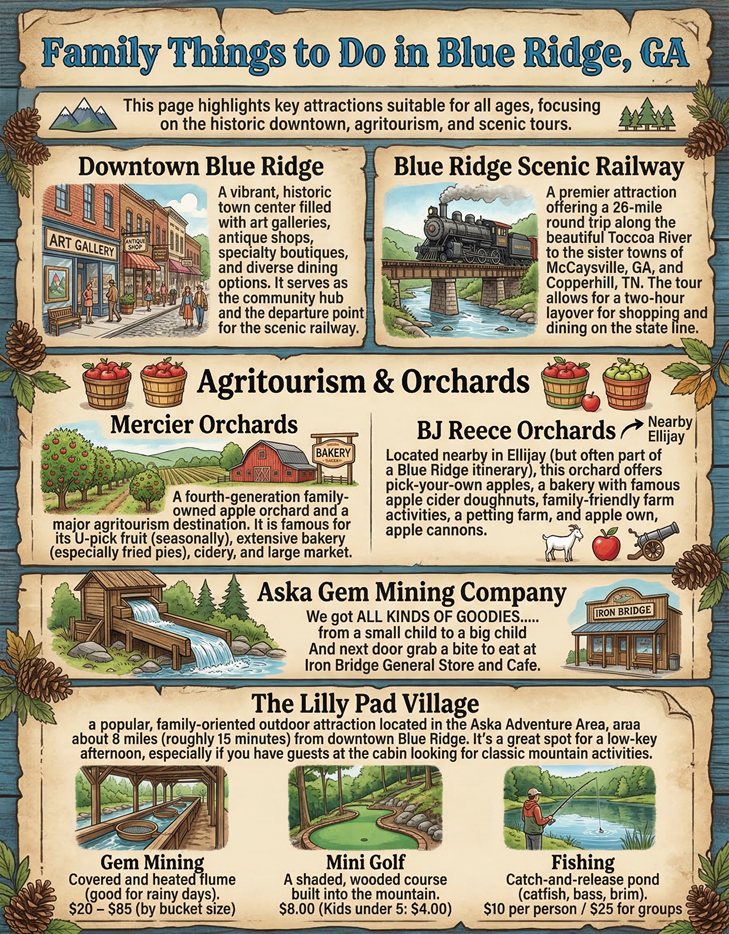

Hiking & Waterfalls
Fall Branch Falls
"A simple hike for everyone!"
A beginner-friendly hike located on the Benton MacKaye Trail (BMT). A short walk leads to a spectacular double waterfall.
AllTrails Map →Long Creek Falls
"Where AT and BMT meet."
Accessed via a beautiful short hike from the Three Forks area, where the Appalachian Trail (AT) and BMT both pass through.
Aska Trail System
"Right out your back door!"
Explore **17 miles** of scenic and well-maintained trails ranging from easy walks to moderate challenges. Great for mountain biking or serene woodland hikes.

Family Fun & Tours
Agritourism
Mercier Orchards
A quintessential Blue Ridge experience. Famous for **fried pies**, cider, and U-Pick seasonal fruit. (We strongly recommend the apple pies!)
Distance: 30 minutes away
Scenic Tour
Blue Ridge Scenic Railway
A charming **26-mile round trip** along the Toccoa River to McCaysville, GA. A relaxing way to see the mountains and enjoy the views.
Activities
The Lilly Pad Village
Located just **15 minutes** away, offering fun for all ages with gem mining, mini-golf, and a peaceful fishing pond.


Local Dining Spots
Great river views and seafood. Call for reservations.
Riverside setting, perfect for large groups.
Ideal for breakfast and casual lunch. (Close by!)
Try their famous burgers after your hike.